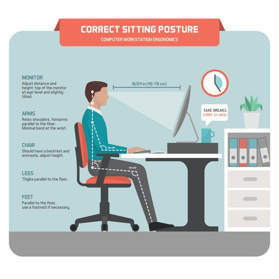

Ergonomics
Computer ergonomics are important because, believe it or not, working on a computer for longer periods of time can actually be detrimental to your overall health.
Computer ergonomics works to ease the following conditions that can result from a lot of computer time:.
Blurred vision / headaches: A computer screen that is not correctly positioned or needs to be adjusted for brightness and contrast can cause blurred vision from straining to see the screen. It can also lead to headaches. Software ergonomics can reduce these effects by bringing the display far enough away that you can clearly see it by straining or leaning forward. In addition, make sure to adjust the screen if it is flickering or too bright/dim.
Syndrome of the Carpal tunnel: This disease, in which the nerve that runs from the hand to the forearm is pinched, can lead to numbness and pain in the arm. Many people attribute one of their causes to spending hours typing or using a computer. Computer ergonomics can aid with the use of keyboard and mouse pad rests to protect the wrists.In addition , changing the keyboard to the correct height and not angling it too sharply can also reduce the risk of carpal tunnel syndrome developing at any stage.
The neck and back of the pressure: Sitting for long periods of time will take a toll on the back. In addition, if your computer monitor is set at the wrong angle, your neck can be strained. Computer ergonomics can assist with this in a variety of ways. Make sure your chair has proper back support, wheels, and is sturdy can help ease back strain and promote good posture.Holding the monitor at or below the eye level, as well as positioning any document holder at the same level as the computer screen, will help to reduce the pressure of the neck..
posture: Bad posture can come from sitting at a desk all day long, which can lead to slouching and back pain. It can be resolved with the use of a chair with adequate back support. In fact, your desk will be high enough that you don't have to slouch to get to your keyboard.This should also be high enough that your legs sit easily underneath without having to shift your legs around or stretch unnecessarily to avoid reaching parts of the desk..
How to Protect You from Pressure and Pain
Arrange Your Workstation: While you're working, take time to change workstations that aren't quite correct to eliminate uncomfortable and often performed movements.
Adapt Laptops: Laptop computers are not ergonomically designed for extended use. The monitor and the keyboard are so close together that they can not both be in a good position at the same time. It is safer to install a separate monitor and keyboard for extended use.The laptop can be placed on the books so that the top of the screen is at eye level, then use the external keyboard to allow your elbows to rest at 90 ° by your side.
Modify Your Body Mechanics :Do you wear eyeglasses? Be sure that they match correctly to prevent tilting your head. Type in soft strokes and try to keep the muscles relaxed.Sit down, aligning the head, shoulders and thighs. Dream of getting yourself an inch taller when you lie down.Turn your hands while using your keyboard, if you can.
Relax your wrists completely during breaks, including taking your hands off your keyboard.
Change The Work Patterns: Minimize extended computing time wherever possible. Divide work into smaller parts and switch between tasks that require different movements. For illustration, use the mouse alternately with reading and searching the web.
Arm Relaxation: Lower your arms and hands to your side. Shake them gently for a couple of seconds.
Eye Rolls: Roll your eyes clockwise then counterclockwise briefly.
Keep fit: Physical fitness can help you avoid and deal with problems related to computer use. Build your stamina with strength , flexibility, and cardiovascular health exercises.
Squeeze: Lift your arms in front of your chest, with your elbows extended and your thumbs extended. Pull back the elbows, pulling the shoulder blades together. Hold on for a few seconds, then release it.
Head Side to Side: Turn the neck so that the left ear falls to the left eye, then move to the right. Add some resistance by pressing your hand against the side of your head.
Wrist Flex: With your elbows on your desk, softly use your left hand to move your right hand back to your forearm. Keep on for a few seconds, then relax. Repeat the other hand.
